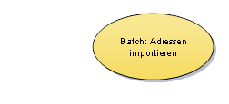
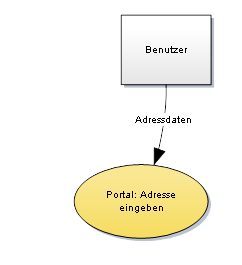
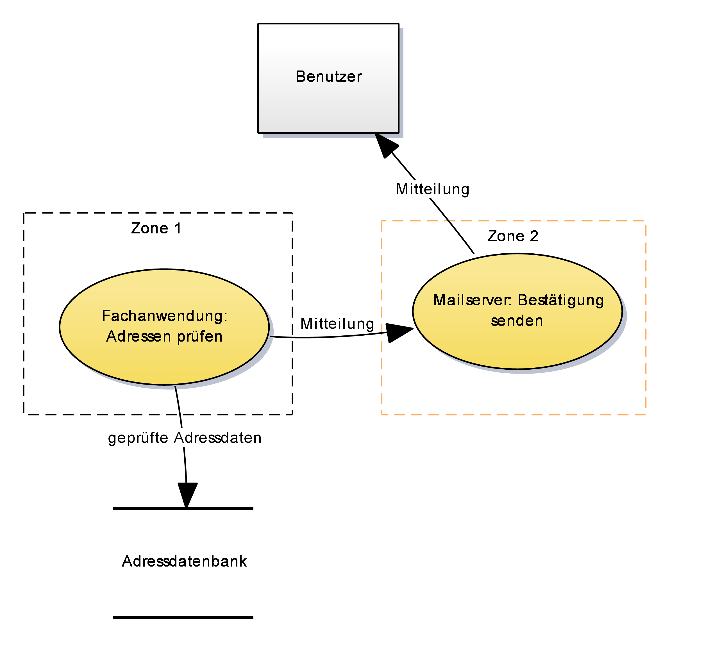

Anleitung zur Erstellung und zum Lesen von Datenflussdiagrammen
1. Erklärung der Darstellung von Datenflussdiagrammen
Eine Anwendungslandschaft besteht aus mehreren Anwendungssystemen, die Daten untereinander und mit ihren Nutzern austauschen. Die Nutzer sind entweder über Schnittstellen zu diesen Anwendungen angebunden, oder benutzen die Anwendungen der Anwendungslandschaft über deren graphische Oberflächen oder Batches.
Die Datenflussdiagramme werden im Dokument nach Anwendungsdomänen und darin nach den verschiedenen fachlichen Themen aufgeteilt. Die Aufteilung muss so gewählt werden, dass jedes Diagramm nicht zu komplex wird. Eine feinere Aufteilung ist also eine gute Lösung, wenn ein Diagramm zu komplex ist.
Die Darstellung der Datenflussdiagramme enthält folgende Elemente:
| Element | Beschreibung |
|---|---|
Nutzer der Systeme werden als Rechtecke eingezeichnet. Dies können z.B. externe Organisationen, externe Behörden oder interne Fachbereiche sein. Nutzer werden in Datenflussdiagrammen meist als „Schnittstellen“ bezeichnet. Da nicht die Schnittstellen der Anwendungssysteme aus der Systemspezifikation abgebildet werden, wird dieser Name hier nicht verwendet. |
|
 |
Prozesse werden als Ovale eingezeichnet. Diese entsprechen den Anwendungsfällen der Anwendungssysteme. Ein Prozess kann dabei mehrere Anwendungsfälle zusammenfassen, z.B. verschiedene Meldungsarten. Dies dient der Übersichtlichkeit der Darstellung. Der Name des Prozesses beginnt mit dem Anwendungssystem, dass ihn umsetzt. Dann folgen ein Doppelpunkt und meist ein Substantiv und ein Verb. |
Datenspeicher werden mit einem Strich über und unter dem Datenspeicher dargestellt. Die Aufteilung der Datenspeicher entspricht der Aufteilung der Datenmodelle der Anwendungssysteme in Modellkomponenten. Zum Zweck der Übersichtlichkeit können Modellkomponenten zusammengefasst werden. |
|
Datenflüsse über Grenzen von Diagrammen hinweg werden mit einem Tor (englisch „Gate“) dargestellt. Das Tor wird in beiden Diagrammen eingezeichnet und jeweils mit dem Namen des anderen Datenflussdiagramms benannt. |
|
 |
Datenflüsse werden als Pfeile eingezeichnet. Datenflüsse beginnen und enden an einem Nutzer, Prozess, Datenspeicher oder Tor. Mindestens ein Ende jedes Datenflusses hängt an einem Prozess. Die Beschriftung am Datenfluss zeigt, welche Daten jeweils übergeben werden. Jedes Datum, das in einem Diagramm dargestellt wird, muss in einer Legende unter dem Diagramm erklärt werden. Dies dient zur Einschätzung, welche Inhalte, Datenschutz- und Sicherheitsrelevanz der Datenfluss hat. In der Erklärung wird das Datum unterstrichen. |
 |
Die Grenzen der Sicherheitszonen werden gestrichelt eingezeichnet. Jede Zone wird dabei benannt und hat ihre eigene Farbe. Die Datenspeicher befinden sich typischerweise in einer eigenen Sicherheitszone. Diese wird der Übersichtlichkeit halber nicht eingezeichnet. Die Nutzer befinden sich typischerweise außerhalb der Sicherheitszonen. |